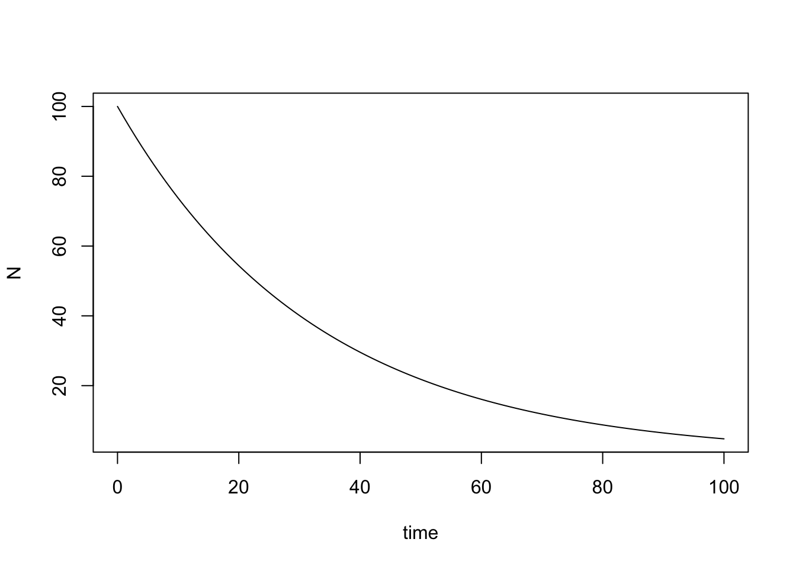
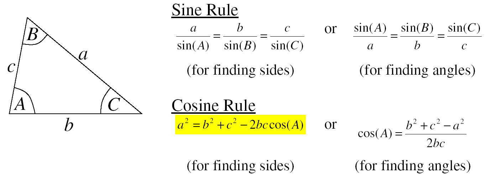
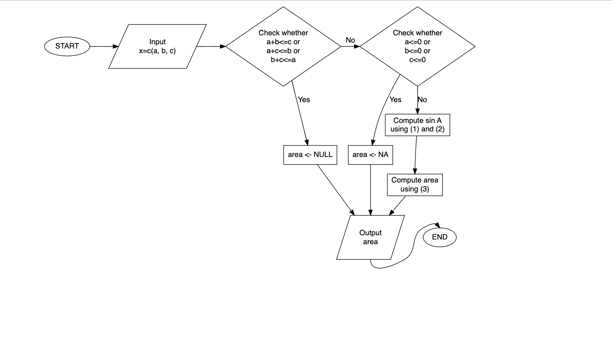

If you have any questions, please raise your hand.
Before leaving the classroom, please check whether your answers are uploaded well.
Students must return their exam papers after the test is finished.
Student Number
Name
Problems
1. (10pts) Consider radioactive decay, in which the rate of decrease in the number of radioactive atoms \(N\) is proportional to the number remaining \[
\frac{\Delta N}{\Delta t} = \frac{N_{t}-N_{t-1}}{t-(t-1)} = - k N_{t-1}, \quad{} t=1,2,\ldots,
\] Let \(N_t\) is the number of radioactive atoms at time \(t\). Let initial number at \(t=0\), \(N_0\), is \(100\) and the constant decay rate \(k\) is \(k=0.03\).
Using for loop, compute \(N_1, \ldots, N_{100}\). Draw a scatterplot of \((1, N_1) , (2, N_2), \ldots, (100, N_{100})\) with x-axis name time and y-axis name N.
# Set up initial conditions and define variablestmin =0; tmax =100; dt =1n = (tmax - tmin)/dt +1# 101 time values from 0 to 100time =seq(tmin, tmax, by = dt)k = .03# Decay rate constantN0 =100# Initial number of atomsN = N0 # Initialize N# Run for loopfor (i in2:n) { dN =-k*N[i-1]*dt N[i] = N[i-1] + dN}# Plot resultsplot(time, N, type ="l")

(2-5). Consider the built-in islands data in R.
2. (2pts) Determine the number of observations in this data.
3. (2pts) Calculate the mean and median of this data.
4. (8pts) Construct a histogram, a normal QQ plot, a boxplot and a dot chart of areas within a single figure using par(mfrow=c(2,2)).
5. (3pts) Compare the QQ plot result with the plots in Figure 3.13; which one is most similar, and what does this tell you about this data set?
6. (5pts) Given a starting value of \(2\), use a fixed-point iteration method to find a zero (to within 4-digit accuracy) of \[
x -\text{ln}(x) + \exp(-x) = x
\]
7. (5pts) Given a starting value of \(2\), use Newton’s method to find a zero (to within 4-digit accuracy) of \[
f(x) = \text{ln}(x) - \exp(-x).
\]
8. (5pts) Let your solution of the problem 7 is \(x_{\text{sol}}\). Draw a curve \(\text{ln}(x) - \exp(-x)\) with x range is [0.5, 2.5] and add a green filled triangle point to describe \((x_{\text{sol}}, \text{ln}(x_{\text{sol}}) - \exp(-x_{\text{sol}}))\).
#actual solution of x -log(x) + exp(-x) = x is#x = 1.30979958580415...#(6) fixed point iterations#starting value 2, first four digitsx <-2count <-0while(abs(x - x +log(x) -exp(-x)) >0.0001){ x <- x -log(x) +exp(-x) count <- count +1}count #3
[1] 3
x #1.309715
[1] 1.309715
#(7) Newton-raphsonx <-2f <-log(x) -exp(-x)tolerance <-0.0001while (abs(f) > tolerance){ f.prime <-1/x +exp(-x) x <- x - f/f.prime f <-log(x) -exp(-x)}x#1.309709
9. (20pts) Write an R function trianglearea, which finds the area of a triangle. Your trianglearea function should match the flowchart in the following picture. Assume that input x is always a length-3 numeric vector containing (a,b,c), without missing values.

\[\begin{equation}
\cos A = \frac{b^2+c^2-a^2}{2bc}
\end{equation}\]
\[\begin{equation}
\texttt{area} = \frac{1}{2}b c \sin A
\end{equation}\]

trianglearea <-function(x){ a <- x[1]; b <- x[2]; c <- x[3]if(a+b<=c | a+c<=b | b+c<=a){ area <-NULL }else{if(a<=0| b<=0| c<=0){ area <-NA }else{ cosA <- (b^2+c^2-a^2)/(2*b*c) sinA <-sqrt(1-cosA^2) area <-0.5*b*c*sinA } }return(area)}trianglearea(c(-1,2,3))